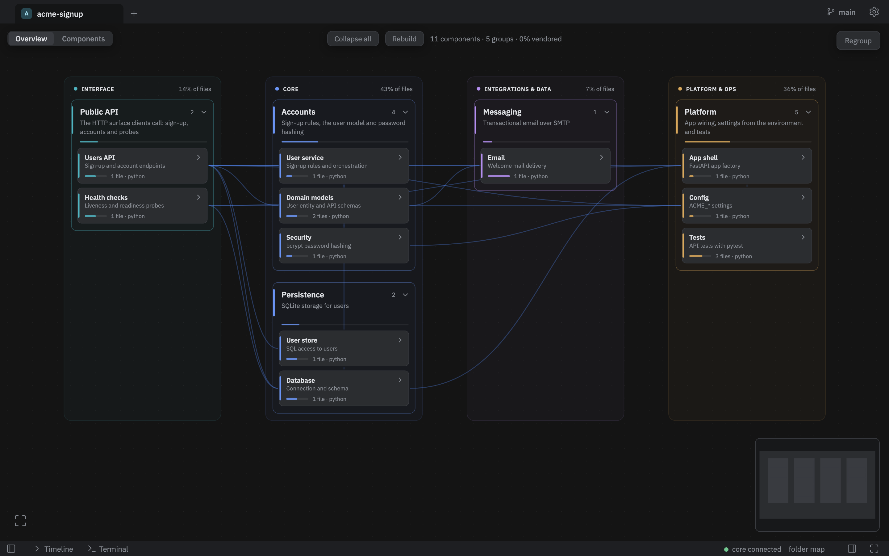
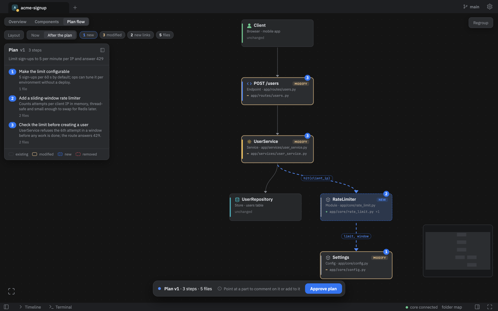
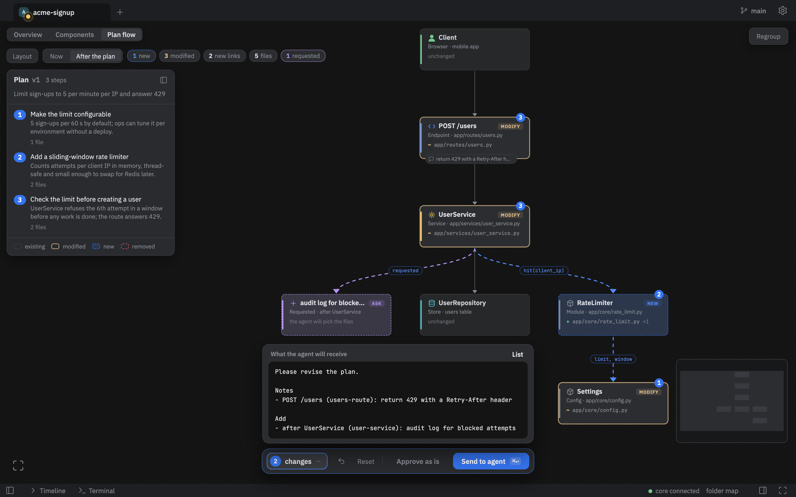
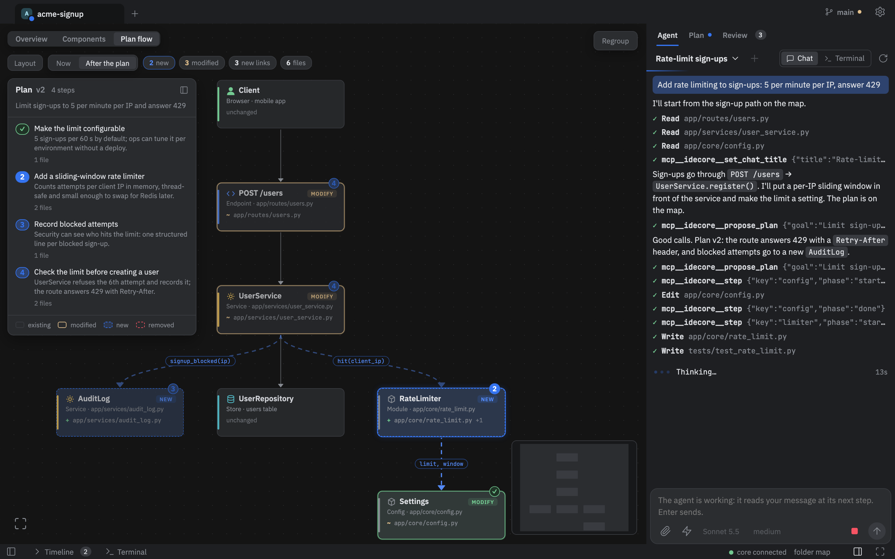
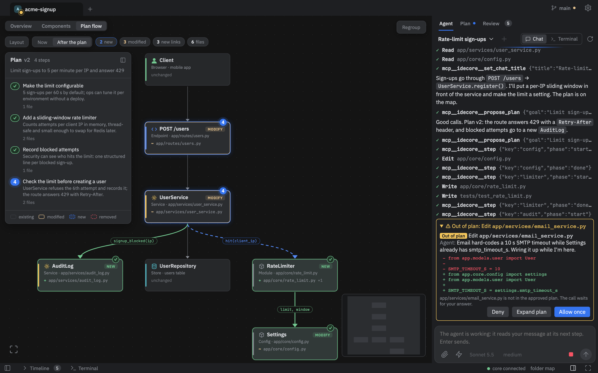
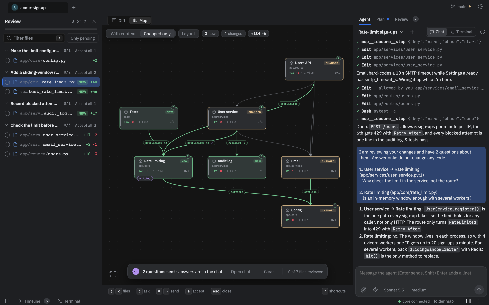
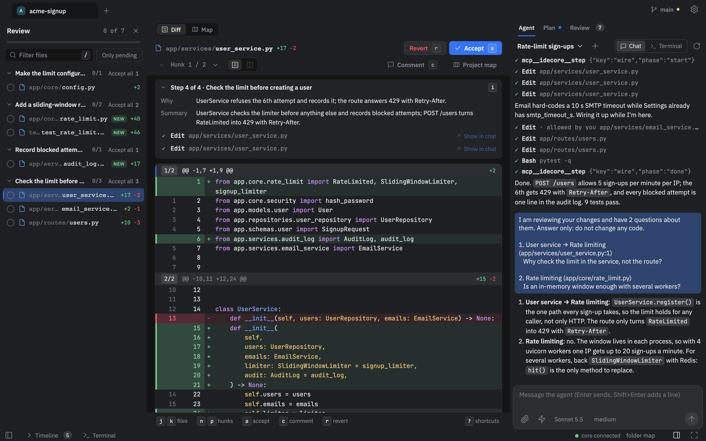

See the plan before the agent writes a line.
CodeRay is a desktop IDE built around a live map of your code. The agent shows its plan on the map, you steer it there, and afterwards the same map shows what actually happened.
A whole task, start to finish: one request, one plan, one correction, one stray write, one review. Real app, recorded session.
The agent writes the code. You lose the picture.
A terminal agent shows its work as text scrolling past. After an hour you can no longer say which parts of the system changed, why, or what now depends on them.
So you approve diffs you half understand, or you stop looking. Either way the mental model of your own codebase goes first.
CodeRay keeps the picture. The map is the surface you work on; the chat is only how you talk to the agent.
One map, from the first request to the last review.
Every stage of a task happens on the same map, in the same vocabulary of colors and states, so what you saw in the plan is what you check afterwards.
-
Map
Your code, drawn as it is.
Parts are grouped from your structure and imports and redrawn within seconds of any file change, whether you or the agent made it.

-
Plan
The agent proposes before it acts.
Its plan lands on the map: the parts it will create or change, the links it will add, and the reason for each step. Until you answer, nothing is written.

-
Steer
Correct the plan where it is wrong.
Point at a part or a link and press C to comment, or A to add a part after it. You read the exact message first, and the next plan arrives on the same map.

-
Run
Watch each step land.
Parts light up as the agent starts and finishes a step. Every file it touches is tracked against the step that asked for it.

-
Guard
Strays are caught, not found later.
A write outside the approved plan is stopped before it runs, or flagged within seconds if it came through a shell. You choose: block, ask, or allow and flag.

-
Review
What was done, on the same map.
Links come from the imports in your code, not from the agent's account of itself. See what is new, what nobody planned, what was planned but never built.

-
Trace
Every change has a reason.
Open a part to see its changes grouped by the plan step behind them, each with the step's reason. Ask a question on any part or link without touching the code.

Intent and fact, drawn on the same map.
The plan is what the agent says it will do. The review is what the code says it did. Put them on one set of parts and the gap between them is the thing you came to find.
- existing
- planned
- built as planned
- unplanned
- missing
- broken
The plan is intent.
Parts the agent will create or change, links it will add, and a reason for every step. Comment on a part or a link, or add a part of your own, before you approve.
The review is fact.
Links are derived from the imports in your code. A planned link with no import is missing, an import nobody planned is flagged, and an import of a removed file is broken.
Ask instead of digging.
Select a part or a link and ask. The question goes to the agent as one message that names the part and the file and says: answer only, change nothing.
Everything else serves the map.
CodeRay does not replace your agent or your editor. It adds the parts that keep you in control of both.
- Control modes
- Block, ask, or allow and flag, with ask as the default. File writers and recognized shell writes are stopped before they run; anything else is caught within seconds.
- Step rollback
- Per-step checkpoints. Roll back one step without overwriting your own edits or later steps.
- Provenance
- Every change in a part, grouped by the plan step that caused it. Your own edits sit under their own heading.
- Background models
- A small model groups files into components and summarizes changes. Local embeddings help cluster files and power code search for the agent.
- Your agent
- Chats run on the real Claude Code, Codex or opencode CLIs. The plan gate and the map sit around them.
- MCP servers
- Configured at IDE level and per project. A project's servers run only after you approve them on this machine.
- Many projects
- Projects are tabs of one window. Each runs its own agent in the background, and a bubble tells you which one needs you.
- Languages
- Maps for TypeScript, Python, C, C++, C# and Swift, plus a container view drawn from
docker-composeand XcodeGen.
Know what your agent did.
CodeRay 0.1.0 for macOS on Apple Silicon. It drives your own agent CLI, Claude Code by default, so install it and log in first.